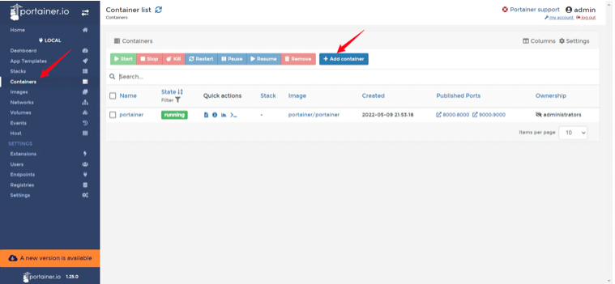
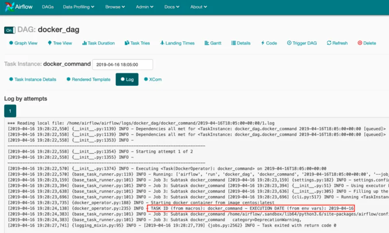
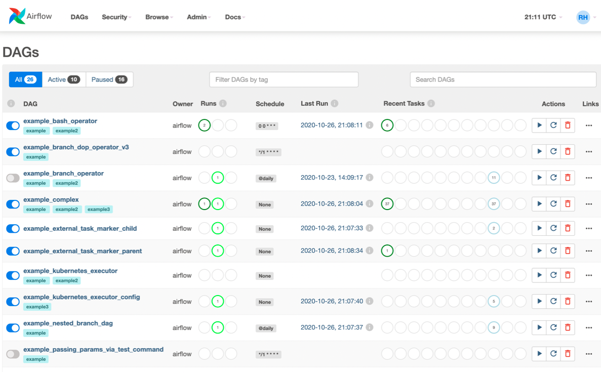
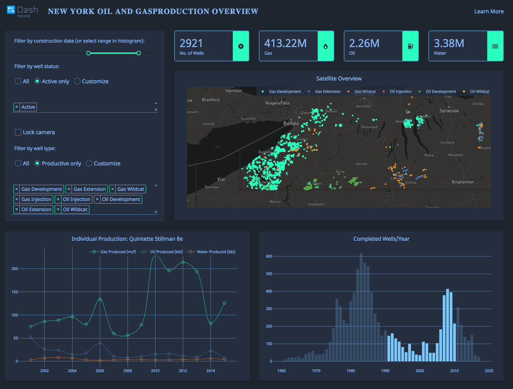

Breumer Group Case#
Problem og introduktion#
Først lad os definer hvad vores case er:
Vi ønsker at udvikle en webbaseret frontend til nemmere administration af disse services således ikke kun superbrugere kan administrere disse.
Til denne præsentation vil jeg starte med at definer hvad jeg ser som de værdier man kan få ved at lave denne løsning.
Herefter vil jeg komme igennem de tre mulighede løsninger jeg er kommet på i form af; en købt løsning, semi opfundne løsning og inginør løsningen.
Til sidst vil jeg fremhæve nogle vigtig pointer for sådan et projekt og hvorfor nogle af de nævnte løsninger nok ikke vil være en mulighed.
Business value#
Figørelse af services.
Læring af software.
Teknologier og frameworks#
Den købte løsning: Portainer#
Gør det muligt at overskue sine docker services og opnå alle de ønskede formål, og har en god interface:

En ulempe man skal være opmærksom på er det er en løsning, som koster penge hvis det skal skaleres på.
Den semi opfundne løsning med Airflow#
Airflow er oprindelig et workflow orchestratering værktøj, men med en del forskellige operator, som er forskellige opgaver man kan sætte i gang og så monitor.
F.eks. hvis vi har en simple DAGder bare kører så kan den køre et docker services med dockerOperator:
from airflow import DAG
from airflow.operators.bash_operator import BashOperator
from datetime import datetime, timedelta
from airflow.operators.docker_operator import DockerOperator
default_args = {
'owner' : 'airflow',
'description' : 'Use of the DockerOperator',
'depend_on_past' : False,
'start_date' : datetime(2018, 1, 3),
'email_on_failure' : False,
'email_on_retry' : False,
'retries' : 1,
'retry_delay' : timedelta(minutes=5)
}
with DAG('docker_dag',
default_args=default_args, schedule_interval="5 * * * *", catchup=False) as dag:
t1 = BashOperator(
task_id='print_current_date',
bash_command='date'
)
t2 = DockerOperator(
task_id='docker_command',
image='centos:latest',
api_version='auto',
auto_remove=True,
command="/bin/sleep 30",
docker_url="unix://var/run/docker.sock",
network_mode="bridge"
)
t3 = BashOperator(
task_id='print_hello',
bash_command='echo "hello world"'
)
t1 >> t2 >> t3
Det giver os en Brugerflade der kan let se hvilke services vi har sat i gang og finde frem til en logging:

Kikker vi på DAGs kan vi se hvilke opgaver der er og det giver os en del funktionalitet med at kører dem igen.

Der er dog umiddelbart en række ulemper ved at bruge Airflow:
Ikke bygge til formålet.
Kan ikke skaleres?
Dog er der også en
kubernetesOperator, så måske er der en fremtid.
Har en stejl læringskurve.
Inginør løsningen#
Vi kan også siger vi bygger noget op fra grunden, hvor vi kan burge python som udviklingssprog og benytter of af;
logging
pyttest
dash
Der er en masse andre funktionaliteter som skal tages med, men jeg forstiller mig der er en mulighed for at lave en cool UI såsom:

Hvor man selvfølgelig bygger noget i stil med Portier og Airflow.
Opmærksomhedspunkter#
Tidshorisont.
Værdi.
Omkstninger.
Min rejse til i Data Enginneering#
Jeg er i gang med et kursus hos datacamp, som har en spor indenfor data engineering.
Ud over dette har jeg stor erfaring med at tage kurser fra Coursera, hvor jeg i min data analyst rejse er i gang med et microsoft certificeringskursus for data analyst. Derfor kigger jeg meget ind i to kurser herfra:
Udover disse vil jeg bare bruge min nysgerrighed til at finde ud af meget mere om faget og hvordan jeg udvikler mig.